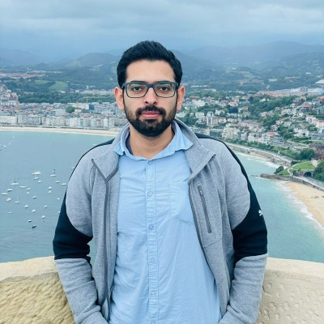

Physicist · Spintronics
Himanshu Bangar
I study how spin currents and magnetization behave at the interfaces of quantum materials, including 2D materials, kagome magnets and altermagnets, with the goal of faster, more energy-efficient spintronic devices.
Research
My work sits at the meeting point of magnetism and materials science. I grow and characterize magnetic thin films and heterostructures, then measure how they convert between spin and charge currents and how spin-orbit torques drive their magnetization. Recent projects cover large spin-to-charge conversion at the interface between 2D transition-metal dichalcogenides and permalloy, the giant spin Hall conductivity of the kagome antiferromagnet Mn₃Sn, and large-area SnS films for spin pumping.
I completed my Ph.D. at the Indian Institute of Technology Delhi with Prof. Pranaba Kishor Muduli, with a thesis on Magnetization Dynamics in Quantum Materials-Based Heterostructures. I now work in Gothenburg, Sweden, where I have helped organize the Sweden Magnetism Meet 2026 and the Workshop on Altermagnets at Chalmers University of Technology.
- Spintronics
- Magnetization dynamics
- Spin-orbit torques
- Magnetic thin films & multilayers
- 2D materials
- Weyl semimetals
- Altermagnets
Publications
- Optimization of growth of large-area SnS thin films and heterostructures for spin pumping and spin-orbit torqueFirst author Physical Review Materials 7, 094406 (2023)
- Large spin-to-charge conversion at the two-dimensional interface of transition-metal dichalcogenides and permalloyFirst author ACS Applied Materials & Interfaces 14, 41598 (2022)
- Large spin Hall conductivity in epitaxial thin films of kagome antiferromagnet Mn₃Sn at room temperatureFirst author Advanced Quantum Technologies 6, 2200115 (2022)
- Kagome magnets: the emerging materials for spintronic memories Proc. Natl. Acad. Sci. India Sect. A: Phys. Sci. (2023)
- Intrinsic anomalous Hall effect in thin films of topological kagome ferromagnet Fe₃Sn₂ Nanoscale 14, 8484 (2022)
- Spin pumping through different spin-orbit coupling interfaces in β-W/interlayer/Co₂FeAl heterostructures ACS Applied Materials & Interfaces 14, 37182 (2022)
For the full and current list, see my Google Scholar profile.
Talks & conferences
Organizer
Selected talks
- Nov 2026OralMMM 2026 · Honolulu, Hawaii, USA
- Sep 2026InvitedWorkshop on Altermagnets · Gothenburg, Sweden
- Jun 2026OralSweden Magnetism Meet 2026 · Gothenburg, Sweden
- Apr 2026OralIEEE INTERMAG 2026 · Manchester, UK
- Aug 2025OralJEMS 2025 (Joint European Magnetic Symposia) · Frankfurt am Main, Germany
- Jul 2025OralSwedish-Korean Orbitronics Workshop 2025 · Gothenburg, Sweden
- Jan 2025OralMMM 2025 · New Orleans, USA
Earlier talks and posters
- May 2023PosterINTERMAG 2023 · Sendai, Japan
- Oct 2022OralMMM 2022 · Minneapolis, USA
- Jun 2022PosterSol-SkyMag 2022 · San Sebastián, Spain
- Dec 2021PosterIWPSD 2021 · online
- Nov 2021PosterSymposium on Magnetism and Spintronics · NISER, Bhubaneswar
- Aug 2021PosterEPFL–ETH Zurich Summer School: Spintronics and Magnetism in 2D Materials · online
- Nov 2020OralMMM 2020 · virtual
- Nov 2020PosterIEEE ICEE 2020 · IIT Delhi
- Aug 2020OralAround-the-Clock Around-the-Globe Magnetics Conference · IEEE Magnetics Society
- Aug 2020PosterSPICE Workshop: 2D Van der Waals Spin Systems · online, Mainz
Education & honors
- From 2018Ph.D. in PhysicsIndian Institute of Technology Delhi · Supervisor: Prof. Pranaba Kishor Muduli
- 2016 – 2018M.Sc. Physics, Gold Medalist (1st rank)Dr. B. R. Ambedkar National Institute of Technology, Jalandhar
- 2013 – 2016B.Sc. (Hons.) PhysicsUniversity of Delhi
Awards & grants
Experimental toolkit
- Magnetron sputtering & pulsed laser deposition
- Ferromagnetic resonance (FMR) & spin pumping
- Spin-torque FMR & inverse spin Hall effect
- Second-harmonic Hall & switching measurements
- MOKE magnetometry & microscopy
- AFM / MFM
- Optical & e-beam lithography, Ar-ion milling
- XRD, XRR, Raman, SEM, XPS
- Micromagnetic simulations (MuMax³)
Contact
I'm always glad to talk about collaborations, research positions, or anything spin-related.